地政学
ゴムはテヘラン南方の交通回廊にあり、聖職者教育と国家政治の距離が近い都市である。首都、ナジャフ、マシュハド、湾岸方面を結ぶ移動の中で、宗教的発言力と統治の緊張を可視化する。砂漠も境界になる都市である。
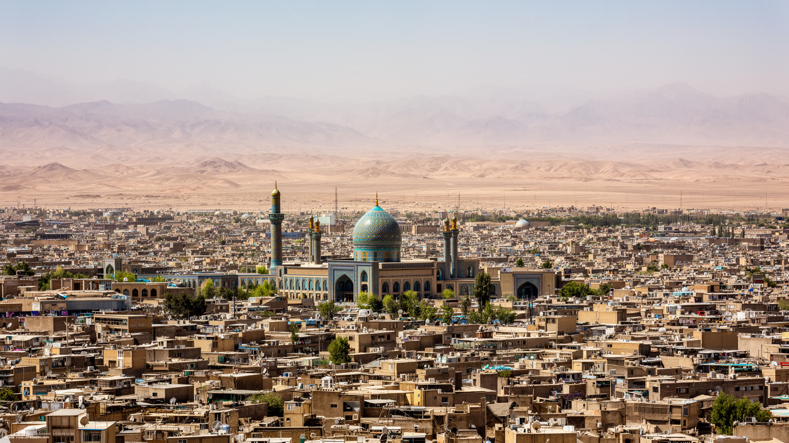
🇮🇷 イラン / アジア / World City Atlas
テヘラン南方の乾いた平原に、ファーティマ・マアスーメ廟、神学校、出版、巡礼、国道、砂漠縁辺の生活が重なるシーア派学術都市。
都市の骨格
ゴムはイランの宗教的権威を支える学術都市であり、テヘランと中部イランを結ぶ交通軸の要衝でもある。祈り、政治、出版、商いが乾いた平原で交差する。
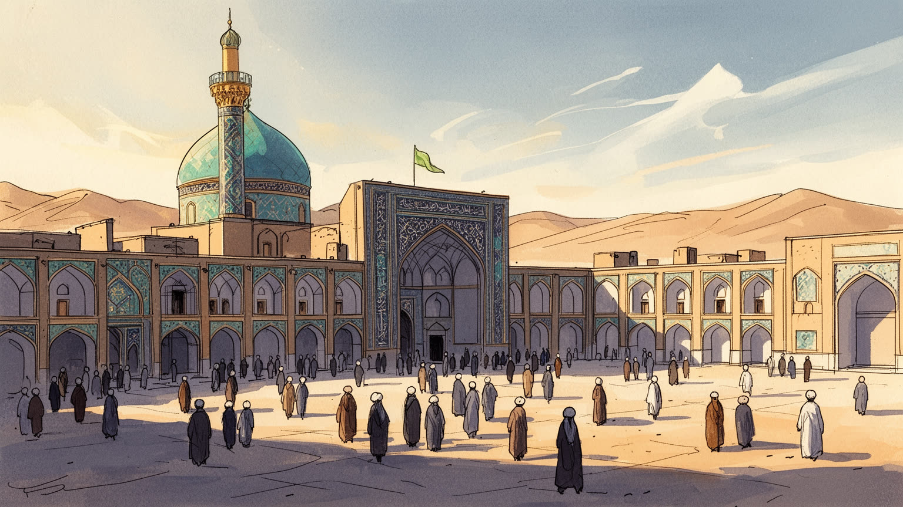
ゴムはテヘラン南方の交通回廊にあり、聖職者教育と国家政治の距離が近い都市である。首都、ナジャフ、マシュハド、湾岸方面を結ぶ移動の中で、宗教的発言力と統治の緊張を可視化する。砂漠も境界になる都市である。
聖廟、神学校、出版、宿泊、食堂、絨毯、陶器、物流、小売が雇用を作る。巡礼期の需要は収入を生むが、家賃、季節変動、暑熱、若者の就職、女性の働き方は生活課題として残る。工場と小商いも都市を支える力だ。
ファーティマ・マアスーメ廟と神学校は、祈り、学問、説教、出版、家族の巡礼を結びつける。宗教は観光資源である前に、日々の倫理、学び、服装、食、家族関係を整える生活文化である。声の伝統も厚い街である。
住民は聖地の誇りと、暑さ、水不足、住宅、教育、病院、交通混雑を同時に抱える。巡礼者は聖廟や市場を訪れるが、住宅地、郊外開発、バス停、学校を見ると生活都市の姿が分かる。日常の調整が続く街である今日。
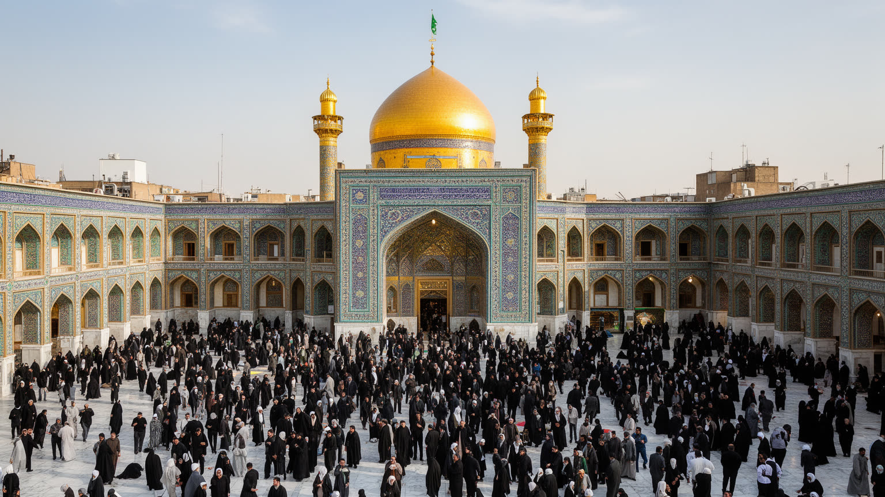
ゴムの中心は、ファーティマ・マアスーメ廟を軸にした聖域である。黄金のドーム、広い中庭、参拝者の列は都市の象徴だが、聖廟は写真の対象にとどまらない。周囲の市場、宿、食堂、宗教書店、タクシー乗り場、巡礼者向けの休憩所は、祈りに必要な時間と身体を支える装置になっている。家族で訪れる人、神学生、地方から来た商人、外国人巡礼者、周辺で働く店員が同じ街路を使い、聖域の近さは地価、商売、警備、歩行者の流れを決める。聖廟が拡張され整備されるほど、多くの人を受け入れやすくなる一方、古い路地や住民の生活は押し出されやすい。ゴムを読むには、聖なる中心の荘厳さだけでなく、その中心を日々維持する清掃、給水、案内、寄付、修繕、交通整理を見る必要がある。祈りの空間は静けさを求めるが、実際には膨大な労働と商いの上に成り立つ。聖廟に近い地区で暮らす住民にとって、聖地の誇りと混雑の負担は分けられない。中心の輝きは、都市全体を引き寄せる重力であり、同時に生活の細部を絶えず組み替える力でもある。地方から来る巡礼者には一時の安らぎを与え、住民には毎日の通勤や買い物の条件を変える。葬儀、誓願、結婚前の祈り、学業成就の願いもこの中心に集まるため、聖廟は人生の節目を記録する場所でもある。街を歩く時は、ドームを眺める視線と、そこへ続く日用品の店や狭い歩道を同時に見る必要がある。
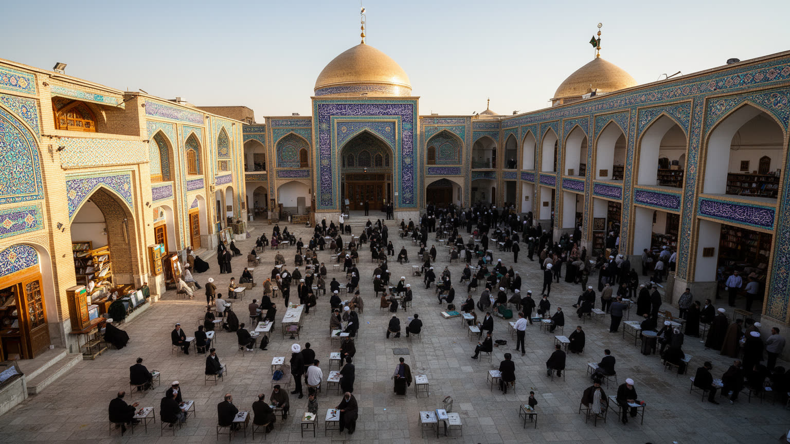
ゴムの重要性は、聖廟だけでなく神学校の集積にある。ホウゼと呼ばれる宗教教育の場では、法学、神学、哲学、コーラン学、説教、言語、現代社会への応答が学ばれ、若い神学生は地方や国外から集まる。授業は教室だけで完結せず、モスク、書店、図書館、寮、師弟関係、食堂での議論へ広がる。ゴムで形成される宗教知は、説教、出版、衛星放送、学校教育、家庭の倫理、政治的判断に影響するため、都市の学びは国境を越える力を持つ。一方で、学問の自由、国家との距離、女性の教育、少数派への視線、若者の将来は緊張を含む。神学生の生活は必ずしも豊かではなく、寮費、家族扶養、就職、社会の期待が重くのしかかることもある。ゴムを学術都市として読むことは、宗教を抽象的な権威として見るのではなく、毎日読む本、暗記する文、師へ質問する時間、出版物を配る店員の働きまで見ることだ。知識は聖職者だけのものではなく、家庭、学校、政治討論、追悼儀礼を通じて社会へ流れ込む。だからゴムの街路には、祈りの声と同じくらい、解釈をめぐる議論の気配がある。外国人神学生の存在は、アラビア語、ウルドゥー語、英語、アフリカや中央アジアの言葉を街に持ち込み、ゴムを国際的な学びの場にしている。その多様性は、教義の共有と生活文化の違いを同時に生む。学びを支える本屋や寮の食堂も、都市の知的基盤の一部である。
ゴムはイラン現代政治を読む上で欠かせない都市である。シーア派学問の中心であるだけでなく、革命前後の宗教運動、聖職者の発言、国家制度との結びつきがこの都市を全国政治の舞台にしてきた。テヘランから近い位置は、首都の権力と宗教的正統性を結ぶ距離を短くし、政治家、聖職者、学生、巡礼者、記者の移動を容易にする。公共空間には、殉教者の記憶、革命の標語、国家的な儀礼、治安の存在が重なり、宗教的な敬虔さと政治的な管理はしばしば同じ場所で見える。とはいえゴムを一枚岩の保守都市としてだけ見ると、住民の多様な声を取り逃がす。商人、若者、女性、労働者、地方出身者、外国人神学生は、政治への距離感も生活上の関心も異なる。物価、雇用、住宅、教育、インターネット、移動の自由は、宗教都市でも日常の切実な問題である。ゴムの政治性は、大きな演説や制度だけでなく、どの本が読まれ、どの言葉が慎重に選ばれ、どの集会が許され、どの沈黙が残るかに現れる。宗教的権威が国家と近いほど、その都市は社会の期待と不満を同時に受け止める。ゴムを見ることは、信仰と統治が互いを支えながらも、常に緊張を生む現代イランの縮図を見ることでもある。国家の中心から少し離れた都市だからこそ、首都で直接言いにくい不満や期待が宗教的な言葉に置き換えられることもある。政治は議会や官庁だけでなく、説教の余白、追悼集会、学生寮の会話にも現れる。
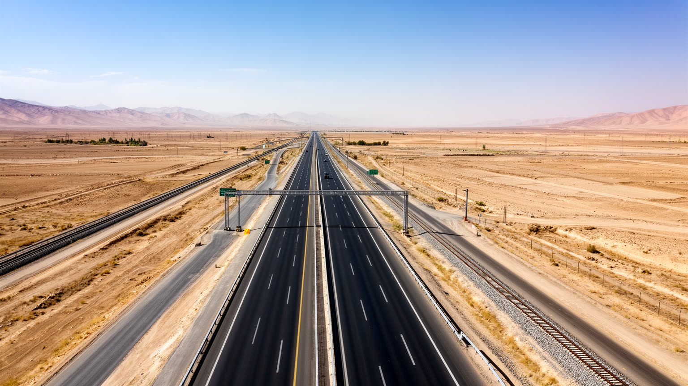
ゴムはテヘランの南に位置し、イラン中央部へ向かう道路と鉄道の重要な結節点である。首都から短時間で届く距離は、巡礼者、神学生、行政関係者、商人、家族旅行者の流れを絶えず生み、都市を孤立した聖地ではなく広域回廊の一部にしている。高速道路沿いには物流施設、燃料、休憩、郊外住宅、工場、バスターミナルが並び、聖廟周辺の歩行者空間とは違う都市の顔を見せる。北には首都圏、東には砂漠、南にはイスファハーンや中部都市、西にはアラーク方面の産業圏があり、ゴムは宗教だけでなく物資移動の節点でもある。交通の便利さは観光と商業を支えるが、通過交通、排気、交通事故、郊外の無秩序な開発を招く。巡礼期にはバス、乗用車、タクシー、徒歩の流れが中心部へ集中し、駐車、歩行者安全、案内、多言語対応が課題になる。ゴムの交通を読むことは、聖地へ向かう心の動きと、物流や都市拡大の現実を同時に見ることである。道路は祈りへの道であり、商品を運ぶ道であり、首都の政治的影響が流れ込む道でもある。速くつながるほど都市は豊かになるが、その速度は砂漠縁辺の環境と住民の日常にも圧力をかける。駅やバスターミナルは、短い滞在者と長く住む人が交差する都市の玄関であり、そこで案内、荷物、飲食、祈りの準備が始まる。移動の設計は、聖地の印象を決める重要な公共サービスでもある。
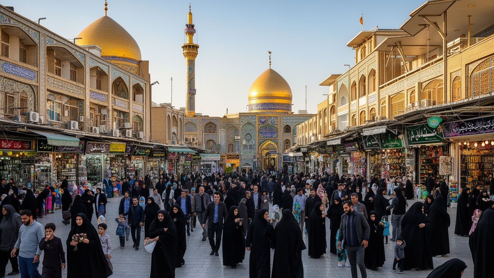
ゴムの経済は、巡礼と宗教教育の周辺に厚い小商いを育ててきた。聖廟近くの市場では、宗教書、礼拝用品、布、香料、菓子、軽食、土産物、日用品が並び、参拝者と住民の買い物が同じ通りで交差する。神学校の存在は、出版、印刷、翻訳、図書流通、寮、食堂、文具、講義録の販売を支え、都市に知識産業の性格を与える。さらに絨毯、陶器、食品加工、物流、建設、修理、タクシー、宿泊業が雇用を広げる。こうした仕事は大企業の本社機能とは違い、家族経営、徒弟的な技能、季節需要、現金の回転に依存することが多い。巡礼者が増える時期には収入が伸びるが、家賃、物価、仕入れ価格、暑熱、混雑は働く人を圧迫する。若者にとって、宗教都市の仕事だけで将来を描けるかは簡単な問題ではない。女性の労働、移住者の雇用、学歴と技能のずれも都市経済に影を落とす。ゴムの産業を読むには、聖廟の光を商品へ変える商人、夜明け前に仕込む食堂、重い本を運ぶ店員、車を走らせる運転手の時間を見る必要がある。信仰経済は敬虔さだけで動くのではなく、細かな労働と生活費の計算によって支えられている。観光客に見えない倉庫、印刷所、修理工房、郊外の小工場も、都市の収入を支える。聖地の表通りを維持するには、裏側の物流と信用取引が欠かせない。そこで働く人の賃金と休息も都市の課題である。
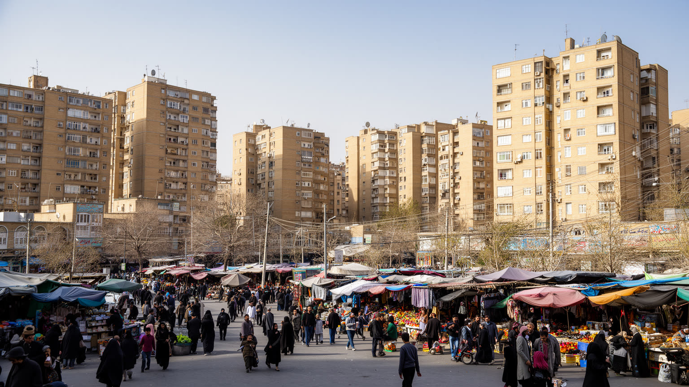
ゴムは巡礼者が通過する都市であると同時に、百万人規模の住民が暮らす生活都市である。聖廟周辺の旧市街には市場、路地、古い住宅、宿、宗教施設が重なり、少し離れると新しい集合住宅、学校、病院、郊外道路、工場地帯が広がる。中心に近い地区では商売の機会が大きい一方、家賃上昇、混雑、駐車、騒音、再開発による移転が生活を揺らす。郊外では比較的広い住まいを得やすいが、通勤、公共交通、学校、医療への距離が負担になることもある。住民の日常には、酷暑の時間帯を避けた買い物、断水や停電への備え、家族の礼拝、子どもの教育、親族の訪問、病院への移動が含まれる。宗教都市のイメージは強いが、実際の生活は家計、住宅、交通、健康、近所づきあいの連続である。女性や高齢者、子どもにとっては、歩きやすい日陰、安心して使えるバス、近くの診療所、公共空間の居心地が都市の質を決める。ゴムの住まいを読むことは、聖地の荘厳さの周辺で、住民がどのように静かな生活の余白を確保しているかを見ることだ。巡礼者を迎える誇りがあるほど、住民には休める場所と日常の速度も必要になる。新しい住宅地では、隣人関係が薄くなる一方、若い家族にとっては家賃や通学の選択肢が広がる。旧市街と郊外の差は、信仰の近さだけでなく、暮らしの費用と時間の差として経験される。
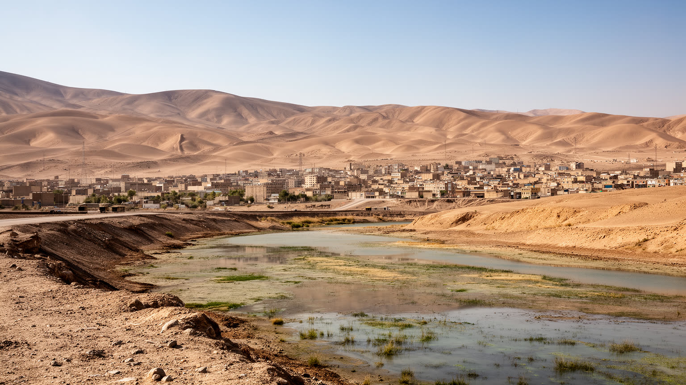
ゴムの自然条件は、乾いた内陸平原と砂漠縁辺の気候によって決まる。夏の暑さは厳しく、日差し、砂塵、乾燥、昼夜の寒暖差が住民と巡礼者の身体に直接影響する。雨は少なく、水資源は都市の成長、農地、工業、家庭生活、聖廟周辺の清掃と衛生を支える基盤である。人口が増え、郊外住宅や工場が広がるほど、給水、排水、地下水、緑地、冷房需要は重要になる。聖地を訪れる人には清潔な水、日陰、休憩所、医療対応が必要で、屋外で働く警備員、運転手、店員、清掃員には暑熱から守られる環境が欠かせない。気候変動が暑さと水不足を強めれば、低所得層の住宅、子どもや高齢者の健康、巡礼期の安全、食品価格に影響が及ぶ。ゴムの都市計画は、道路や建物を増やすだけでは足りない。街路樹、遮熱、公共トイレ、飲水設備、断熱、涼める公共空間、廃棄物処理、節水の仕組みが生活の質を左右する。砂漠は都市の外にある背景ではなく、毎日の予算、労働時間、通学、医療を通じて都市の内側に入り込む。乾燥した気候を前提に、人が祈り、働き、休める環境を作れるかが、ゴムの持続性を決める。庭や街路樹が少ない地区では、歩く距離が短くても身体への負担は大きい。水を使う清掃や冷房に頼る暮らしが増えるほど、環境への圧力と家計の負担は見えやすくなる。涼しさは福祉である。日陰も都市資源である。
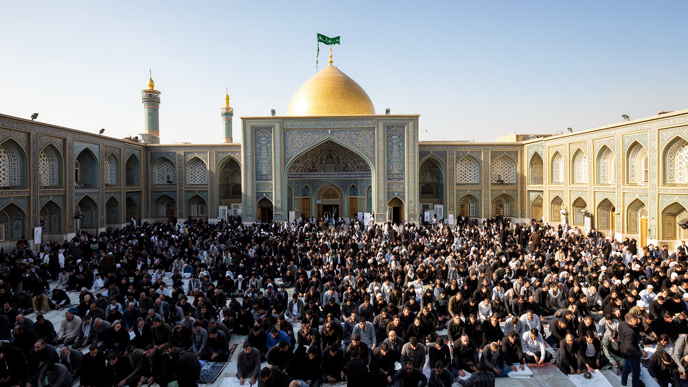
ゴムの巡礼圏は、中心のファーティマ・マアスーメ廟だけで完結しない。郊外のジャムカラン・モスクは、十二イマーム派の終末的な期待や個人の願いと結びつく場所として、多くの参拝者を引き寄せる。夜に祈る人、家族で車を走らせる人、地方からバスで来る人が集まり、中心市街とは違う広がりを持つ宗教空間を作る。ジャムカランへの道路沿いには休憩、食堂、駐車、屋台、宿泊、郊外開発が生まれ、祈りの目的地は都市の土地利用を変える力になる。中心の聖廟が歴史的な権威を示すなら、ジャムカランは現代の不安、希望、救済への期待を受け止める場として読める。だが巡礼が増えれば、交通混雑、廃棄物、夜間の騒音、土地価格、公共交通の不足も目立つ。ゴムを理解するには、旧市街の密度と郊外の巡礼地を一緒に見る必要がある。祈りは中心へ向かうだけでなく、都市の外縁へも人を動かし、住宅地、砂漠、幹線道路を宗教的な地図へ変える。郊外の聖地は、車社会と信仰が結びついた現代的な巡礼の形を示している。そこでは家族の願い、若者の不安、国家的な宗教言説、商いの機会が同じ駐車場と広場に集まる。夜間の参拝は都市の時間を伸ばし、帰路の安全、女性や子どもの移動、公共照明の質を問う。信仰の広がりは、郊外の生活インフラを整える課題とも結びつく。祈る場所が増えるほど、移動の弱い人をどう支えるかが問われる。
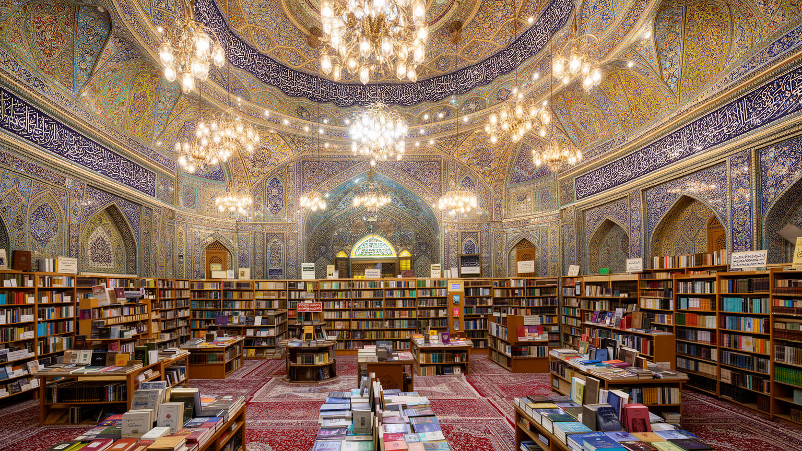
ゴムの文化は、建築や儀礼だけでなく、書物、説教、録音、講義、翻訳、家庭での読み聞かせによって広がる。神学校の集積は宗教出版を育て、法学書、祈祷書、解説書、子ども向け教材、歴史書、多言語の冊子が市場や書店に並ぶ。印刷所、編集者、校正者、翻訳者、店員、配送業者は、宗教的な言葉を物として流通させる仕事を担う。説教や追悼の声は、聖廟の中庭だけでなく、家庭、地方のモスク、オンライン空間へ届き、ゴムの影響力を都市の外へ伸ばす。一方で、出版文化は検閲、政治的な境界、読者の世代差、紙からデジタルへの変化にも向き合う。若者は宗教書だけでなく、大学教育、映画、音楽、ネット文化、国外の情報にも触れ、都市の価値観は一方向には動かない。ゴムの文化を読むには、保守的な宗教都市というラベルで止まらず、本を作る労働、声を聞く人の生活、女性や若者がどのように学びを選ぶかを見る必要がある。宗教的な知は権威の言葉であると同時に、悩みを整理し、家族を説得し、社会を批判する言葉にもなる。書店の棚と講義の声は、ゴムが単なる巡礼地ではなく、言葉を生産し続ける都市であることを示す。家庭で読まれる小冊子や追悼の録音は、公式の教育より柔らかく日常へ入り込む。こうした媒体が、都市の外にいる信徒にもゴムの気配を届けている。言葉の流通が都市の影響圏を広げる。
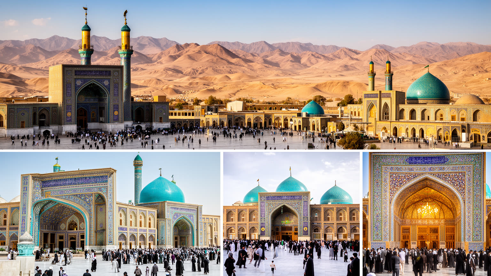
ゴムを訪れる経験は、一般的な観光と巡礼のあいだにある。聖廟、旧市場、神学校周辺、ジャムカラン・モスク、郊外の砂漠景観は訪問者を引きつけるが、都市の中心は信仰の場であり、撮影、服装、歩き方、会話には配慮が必要である。参拝者の祈りや家族の時間を見世物にせず、聖域の規則を守り、混雑時には流れを妨げないことが、都市を理解する入口になる。観光収入は宿泊、食堂、土産物、交通、ガイドに利益をもたらす一方、外からの視線が宗教生活を単純化する危険もある。訪問者が聖廟の美しさだけを消費すると、住民の住宅問題、暑さ、水、労働、政治的緊張は見えにくくなる。市場で食事をし、書店を眺め、バス停や住宅地の様子に注意を向けると、ゴムが生活都市でもあることが分かる。外国人にとっては、イラン社会の複雑さを宗教的厳格さだけで説明しない姿勢も重要である。ゴムの観光は、名所を短時間で回ることより、祈りの速度と住民の日常へ敬意を払えるかで深まる。聖地を訪れる旅は、自分が何を見たいのかだけでなく、見られる側の尊厳をどう守るかを問う行為でもある。短い滞在でも、水を買う店、休む日陰、案内をする人、清掃する人の存在に気づけば、聖地が多くの労働で開かれていることが分かる。礼儀は規則の遵守だけでなく、その労働への想像力でもある。静かに歩く姿勢が、都市への理解を深める。
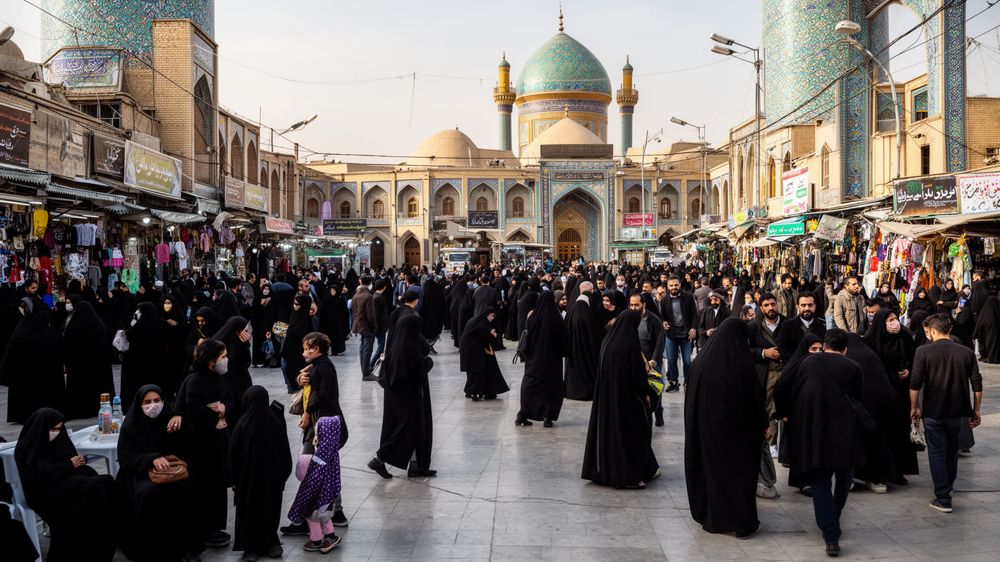
ゴムの未来は、宗教的権威の維持だけでなく、住民が暮らし続けられる都市基盤を整えられるかにかかっている。人口増加と郊外化は住宅、道路、学校、医療、上下水、雇用への需要を高め、乾燥気候と水不足は都市の成長に制約をかける。神学校と巡礼経済は都市の個性を支えるが、若者の多様な職業、女性の学びと働き方、移住者や外国人神学生の生活、低所得層の住まいを十分に受け止めなければ、都市の厚みは失われる。宗教的規範が強い都市では、公共空間で誰が自由に過ごせるか、女性や若者がどのように声を持てるかも重要な社会課題になる。再開発は聖域を広げ、安全と収容力を高めるが、古い市場や住宅地の記憶を消す危険もある。観光と巡礼に依存しすぎれば、季節変動や政治的緊張に経済が揺れやすい。ゴムを持続的な都市にするには、聖地を守ることと、普通の住民の休息、移動、教育、医療、雇用を守ることを同時に考える必要がある。宗教都市の成熟は、権威の強さだけでなく、弱い立場の人が暑さや物価や沈黙に押しつぶされずに暮らせるかで測られる。祈りと生活の両方を支える制度が、次のゴムを形づくる。都市が大きくなるほど、中心の聖域だけでは社会をまとめきれない。郊外の学校、公園、診療所、女性が使いやすい交通、若者の職業訓練が、信仰都市の安定を支える基盤になる。
ゴムを理解するには、聖廟の荘厳さ、神学校の知的権威、革命後政治との近さ、テヘラン南方の交通回廊、砂漠気候の生活条件を重ねて読む必要がある。経済規模だけで見れば、ゴムは世界の巨大金融都市ではない。しかしシーア派世界の学術と巡礼、イラン国家の宗教的正統性、出版と言説、郊外へ広がる信仰圏を考えると、世界都市の地図に置く意味は大きい。聖廟を訪れる人の祈りは、書店の棚、神学生の寮、食堂の仕込み、バスの到着、警備、清掃、給水、家族の住宅費によって支えられている。反対に、政治や規範の強さだけを見れば、住民が持つ誇り、助け合い、学びへの情熱、巡礼者を迎える文化を見落とす。ゴムの核心は、聖なる中心と普通の生活が非常に近い距離で互いを形づくる点にある。乾燥した平原の都市は、祈りを集める場所であると同時に、水、暑さ、雇用、住宅、若者の未来をめぐる現実の都市でもある。ゴムを読むことは、宗教都市を固定した過去としてではなく、現代社会の矛盾と希望を毎日調整する生きた都市として見ることである。祈り、学問、商い、政治、生活が重なり合うその構造に、ゴムの重さがある。ナジャフやマシュハドと並べて見ると、ゴムは聖地でありながら首都政治に近い点で独自の役割を持つ。都市の価値は巡礼者数だけでなく、言葉を作り、社会へ送り出す力にも表れる。